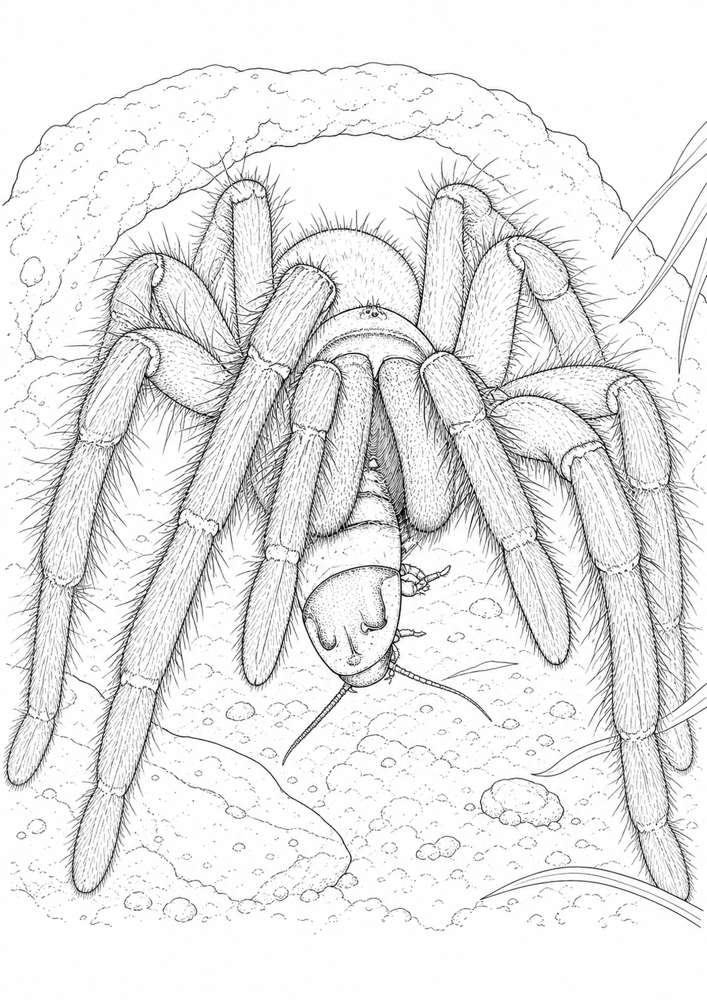
Fugleedderkopp · hunn
Siuzi
Theraphosa apophysis
Se etter den kraftige kroppen, de hårete beina og hvordan hun sitter ved skjulestedet.
Gratis · A4 · klare for utskrift
Hvert ark er laget med et fotografi av det virkelige dyret som utgangspunkt. Du kan følge fargene i originalbildet, eller finne på ditt eget uttrykk.

Tolv dyr · fjorten fotoark
Trykk på «Skriv ut» for å åpne nettleserens utskriftsvindu. Velg A4, stående format og 100 % størrelse for best resultat.

Theraphosa apophysis
Se etter den kraftige kroppen, de hårete beina og hvordan hun sitter ved skjulestedet.
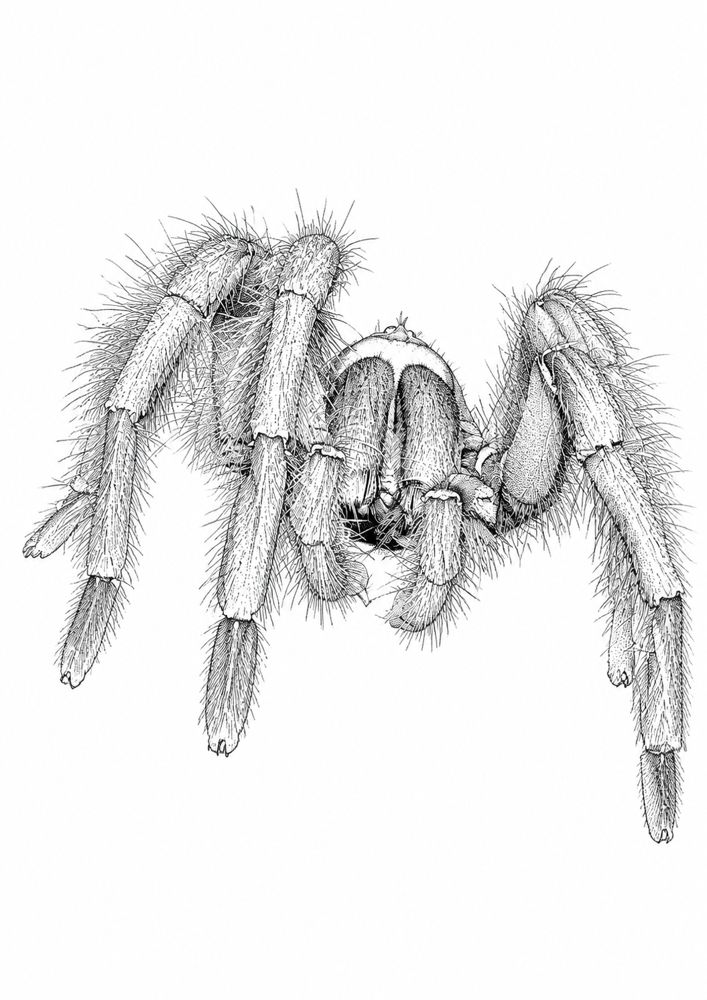
Theraphosa apophysis
Det første fotoarket går tettere på den kraftige kroppen og de lange hårene.
Mauremys reevesii
Sideprofilen viser skallet, klørne og de smale stripene ved hodet.

Acanthoscurria geniculata
Arket beholder den naturlige beinstillingen og de lyse båndene fra originalbildet.
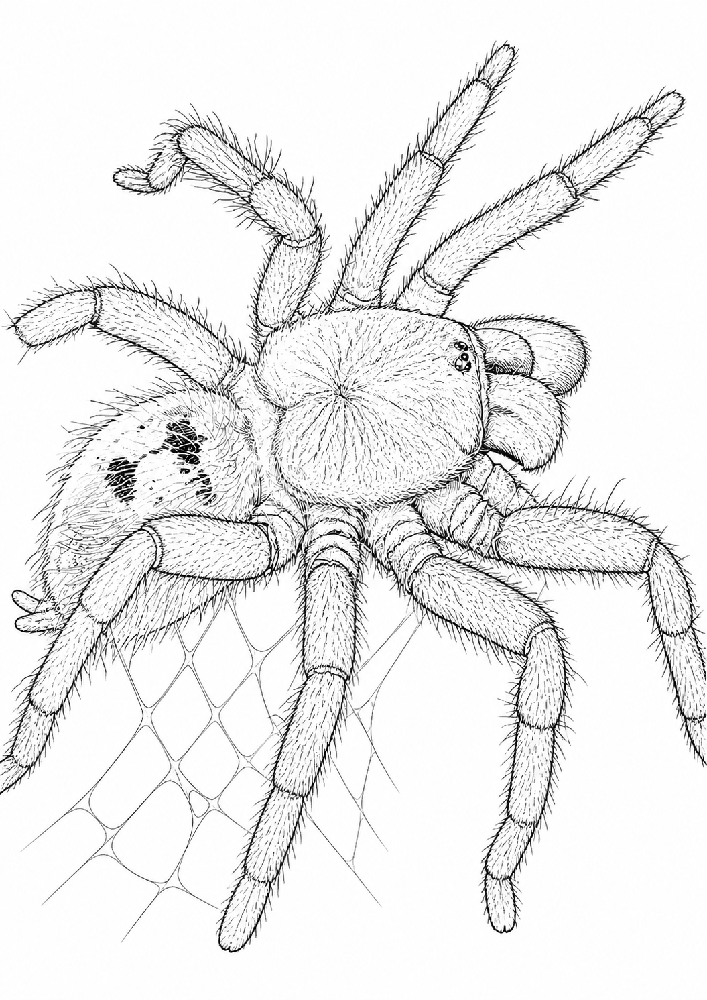
Chromatopelma cyaneopubescens
Ruby har blå bein, grønnlig ryggskjold, oransje bakkropp og mye silke.
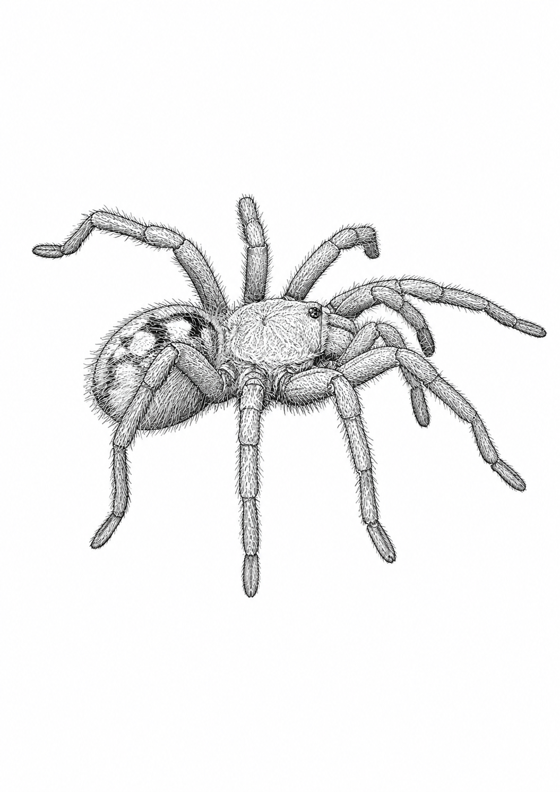
Chromatopelma cyaneopubescens
Det første fotoarket viser Ruby fra siden, med den fargerike bakkroppen som hovedmotiv.
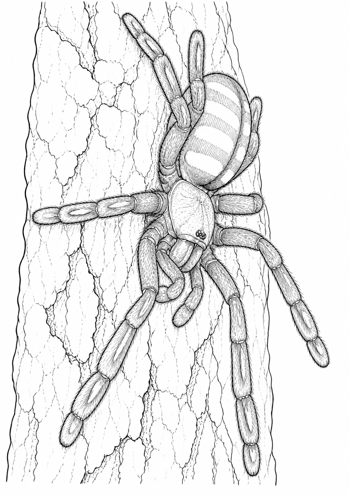
Psalmopoeus irminia
Clara har en langstrakt klatrekropp og tydelige mønsterfelt på beina og bakkroppen.
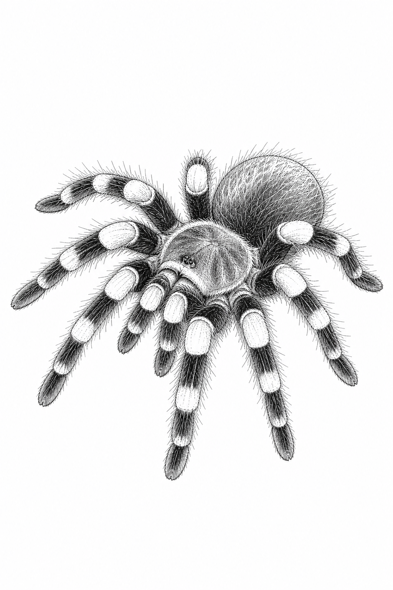
Brachypelma hamorii
De flammende knefeltene gjør Sabrina lett å kjenne igjen, selv uten farger.
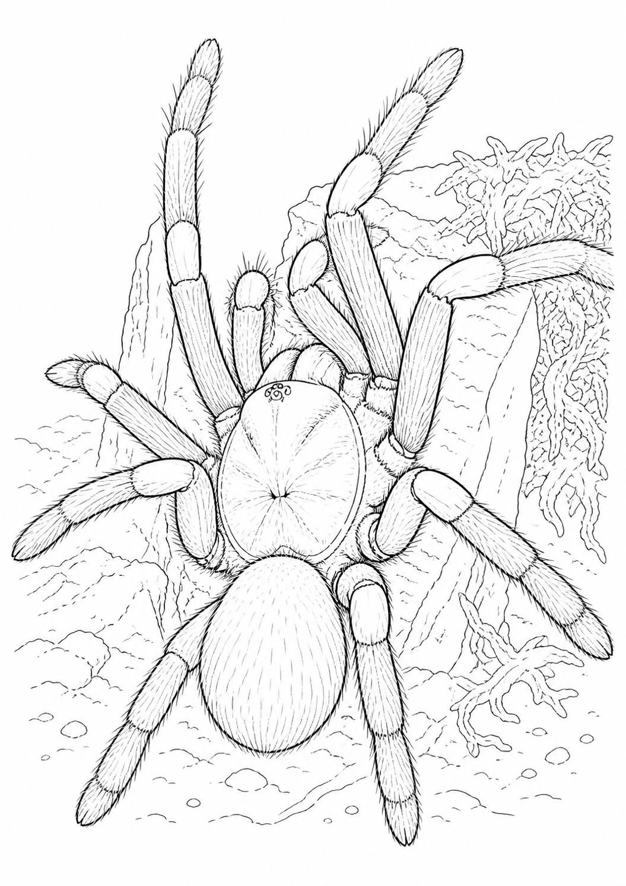
Chilobrachys natanicharum
Legg merke til strålene i ryggskjoldet og de lange beina som leder tilbake mot hulen.
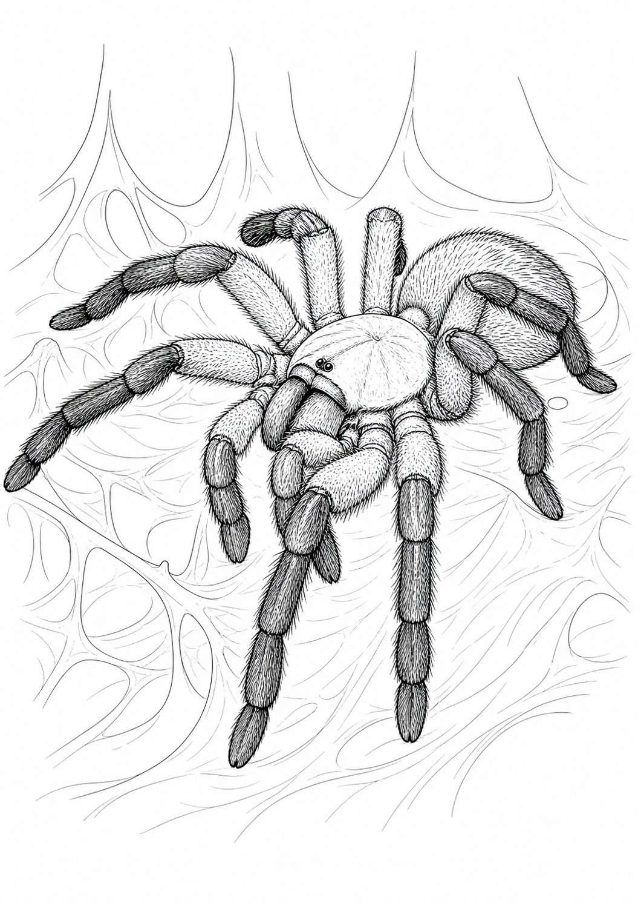
Monocentropus balfouri
Bella har lyse og mørke felt som deler beina i tydelige fargeområder.
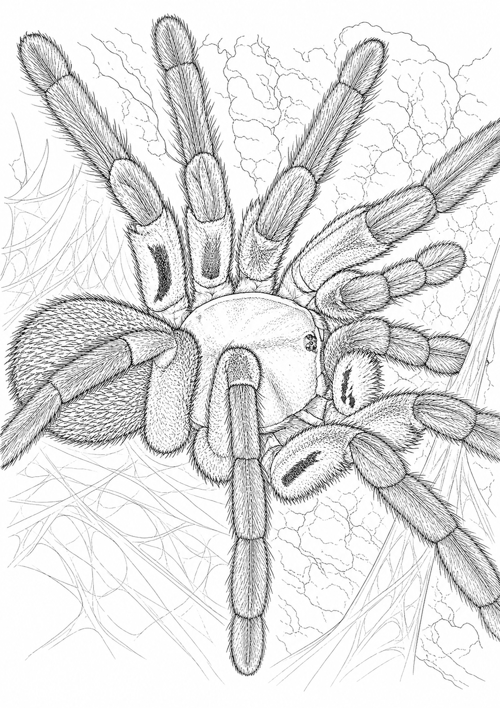
Monocentropus balfouri
Belindas frontvendte stilling viser både pedipalpene og kontrasten langs beina.
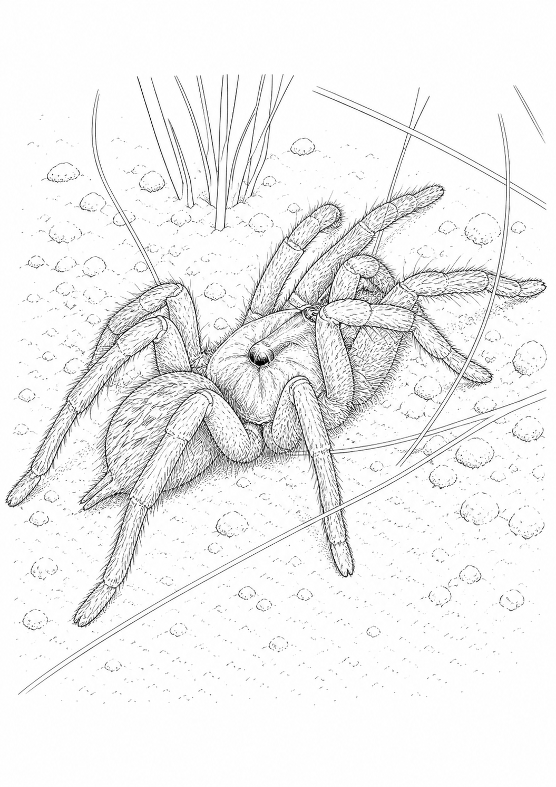
Ceratogyrus darlingi
Se etter den slanke hannkroppen og den lille forhøyningen bakerst på ryggskjoldet.
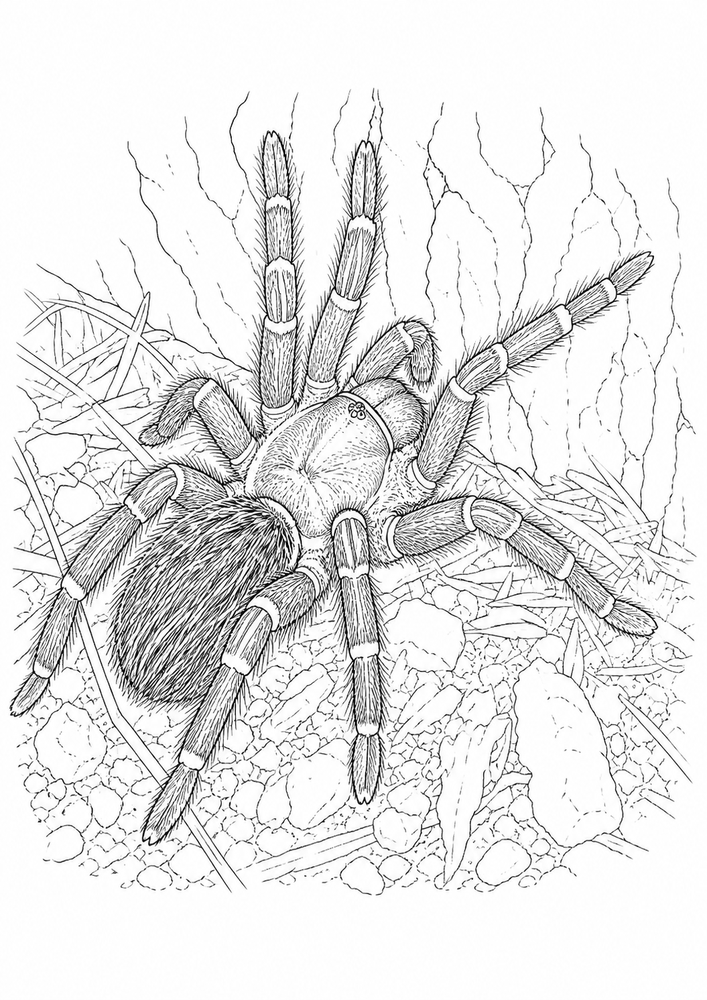
Grammostola pulchripes
De gylne stripene langs beinleddene er Runas tydeligste kjennetegn.
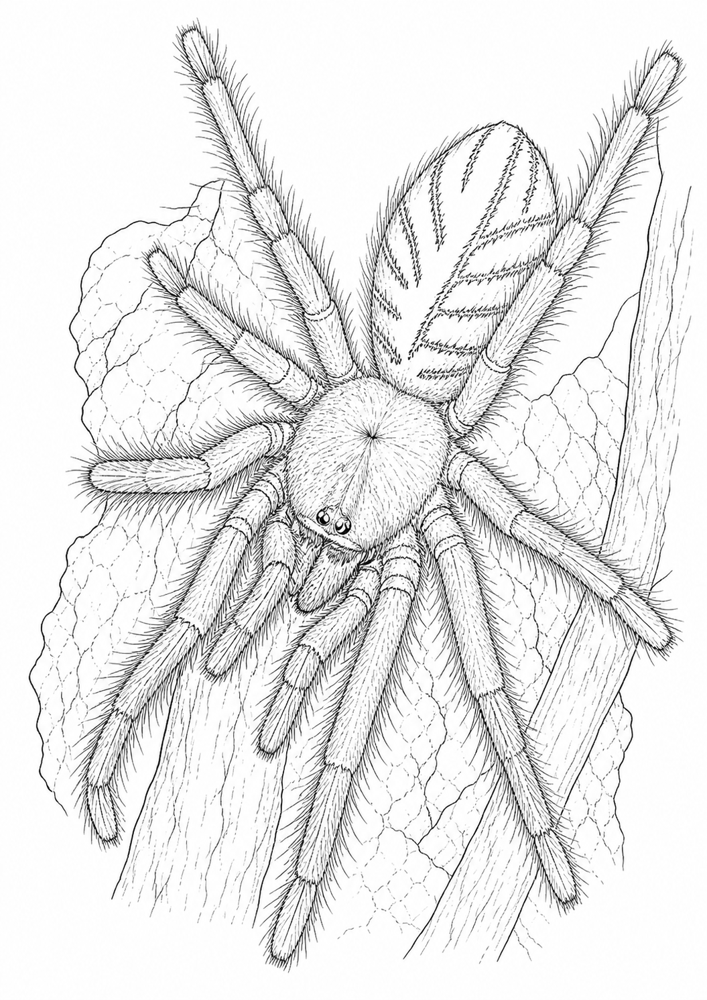
Omothymus violaceopes
Orion har lange klatrebein, lyst ryggskjold og et mønstret felt på bakkroppen.